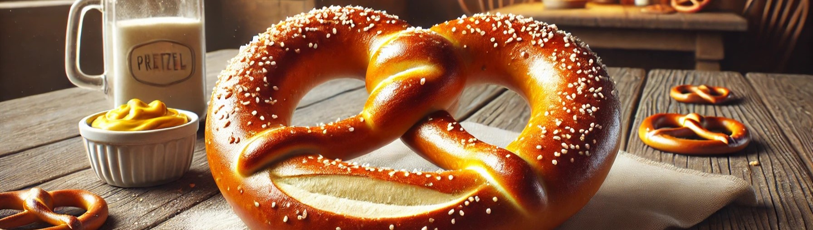

Home
Pretzel

Zutaten
- 500 g Mehl (am besten Weizenmehl Type 550)
- 1 Päckchen Trockenhefe (oder 20 g frische Hefe)
- 1 TL Salz
- 1 TL Zucker
- 300 ml warmes Wasser
- 50 g weiche Butter
- 1 Liter Wasser
- 3 EL Natron (Backnatron)
- 1 Eigelb (optional, für den Glanz)
- Grobes Salz (zum Bestreuen)
Zubereitung
- Teig vorbereiten: In einer großen Schüssel das Mehl mit der Trockenhefe, dem Salz und dem Zucker vermengen.
- Das warme Wasser und die weiche Butter hinzufügen und alles zu einem glatten Teig verkneten.
- Den Teig abdecken und an einem warmen Ort für etwa 1 Stunde gehen lassen, bis er sich verdoppelt hat.
- Brezeln formen: Den gegangenen Teig auf eine bemehlte Arbeitsfläche geben und in 8 gleich große Stücke teilen.
- Jedes Stück zu einem langen Strang rollen (ca. 40–50 cm lang).
- Die Teigstränge zu Brezeln formen, indem du die Enden in die Mitte schlingst und dann die Enden nach unten legst und leicht andrückst.
- Kochen mit Natron: In einem großen Topf das Wasser zum Kochen bringen und das Natron darin auflösen.
- Die Brezeln nacheinander in das kochende Natronwasser legen (jeweils ca. 30 Sekunden pro Brezel) und mit einer Schaumkelle herausnehmen. Das hilft, die typische dunkle Kruste zu bekommen.
- Backen: Die vorbereiteten Brezeln auf ein mit Backpapier belegtes Blech legen und nach Belieben mit Eigelb bestreichen (für den Glanz) und mit grobem Salz bestreuen.
- Im vorgeheizten Ofen bei 220°C (Ober-/Unterhitze) etwa 20-25 Minuten backen, bis sie goldbraun und knusprig sind.
- Genießen: Die Brezeln aus dem Ofen nehmen und etwas abkühlen lassen. Am besten warm genießen!